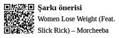

Diyet Profesyonelleri
Hayatı, tatsız tuzsuz sanal gerçekliklere
hapsetmiş profesyoneller
Hayatı, tatsız tuzsuz sanal gerçekliklerine hapsetmiş insanlardır, diyet profesyonelleri. Tıpkı tuzsuz ekmek, şekersiz çay gibi daha sağlıklı ve fakat daha az neşeli olmaları mümkündür. Diyet profesyoneli hali, gayet iyi bilinen, hatta Bridget Jones isminde bir film karakterini de inşa etmiş olan haldir.
Diyet profesyonelleri için de bütün gerçeklik bir soruyla başlar: Pazar akşamları “Yarın ne giyeceğim?” sorusudur her zaman acımasızca, merminin ne kadar derine ineceğini, ne kadar can yakacağını düşünmeden, fütursuzca tetiği çeken...